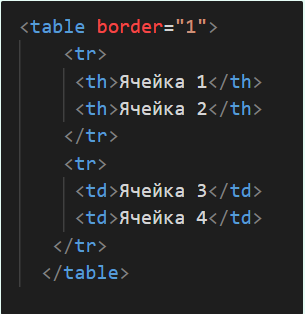
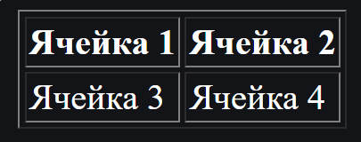

HTML таблицы - это элемент, который используется для организации и отображения данных в табличной форме. Они состоят из строк и столбцов, каждая ячейка которых может содержать текст или другие элементы. Не смотря на то, что в современных веб-дизайнах использование HTML таблиц для отображения данных становится все менее популярным из-за их ограниченной функциональности и недостаточной гибкости, все же стоит понимать как их создавать и редактировать. Особенно важно уметь обращаться с HTML таблицами, если вы будете работать со старыми сайтами, которые используют табличную верстку.
Для добавления таблицы на веб-страницу используется тег (table). Этот элемент служит контейнером для элементов, определяющих содержимое таблицы. Любая таблица состоит из строк и ячеек, которые задаются соответственно с помощью тегов (tr) и (td). Таблица должна содержать хотя бы одну ячейку. С помощью тега (th) можно оформлять ячейки первой строки. Текст в ячейке, оформленной с помощью тега
Пример:
В браузере:
